水情图例

-
 超保(0)
超保(0)
-
 超警(0)
超警(0)
- 正常(0)
- 缺测(0)
水情图例

超保(0)
超警(0)
雨量统计

|
无雨 | () |

|
1-10 | () | ||

|
10-25 | () |

|
25-50 | () | ||

|
50-100 | () |

|
100-200 | () | ||

|
>=200 | () |
工情图例
预报图例
水情图例
图例
泵站图例
水质图例
图例
| 等级 | 图例 |
| 轻度 | |
| 中度 | |
| 重度 |
图例
范围
颜色
| <0.5m | |
| 0.5m-1.5m | |
| >1.5m |
水位图例(m)
流量图例(m³/s)
图例(mm)
| 0-2 | |
| 2-4 | |
| 4-6 | |
| 6-8 | |
| 8-10 | |
| 10-20 | |
| 20-50 | |
| ≥50 |
图例
图例